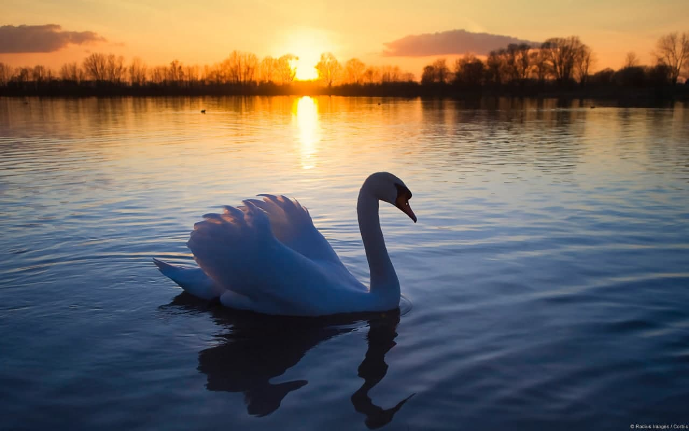
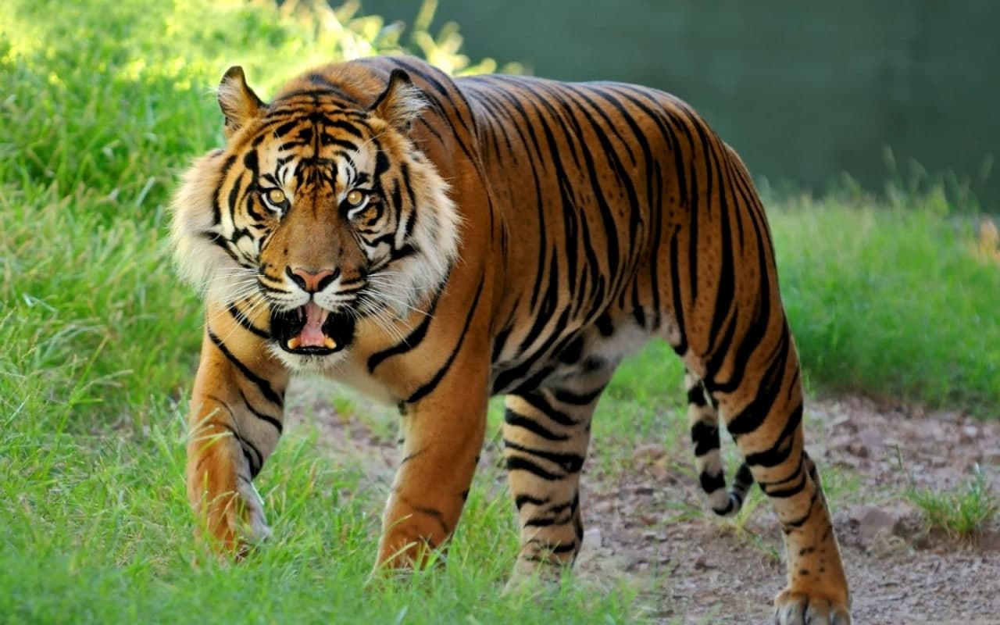

Pushti rangli flamingolar — katta qushlar safiga kiruvchi qushlardan biri, ularning bo‘ylari 1,2-1,5 metrga
ega va og‘irliklari 3,5 killogramlar atrofida albatta ular turli hil vaznga egalar. Eng kichik flamingolar
(ularni kichik flamingo deb atashadi) ularning balandligi 0,8 metrlar atrofida
Rivojlanish nuqtai nazaridan mushuk hayotining birinchi yili inson hayotining dastlabki 15 yiliga to‘g‘ri
keladi.Mushuklar quloqlarini 180 darajaga aylantirishi mumkin.
O‘rtacha mushukning eshitish darajasi insonlarnikiga qaraganda kamida besh baravar yuqori.
Itlar 200 dan 500 gacha so’z va harakat-buyruqlarini eslab qolishlari mumkin. Beshgacha sanashlari mumkin.
Ularning intellektual rivojlanishi ikki yoshli bolaning darajasiga to’g’ri keladi va eng aqlli itlar besh
yoshli bolalar kabi fikrlashadi. Itlar tush ko’radi.
Arslon mushuklar oilasiga mansub yirik yirtqich hayvonlardan biridir. Bu hayvonning bir nechta navlari bor,
bunga qo'shimcha ravishda, har xil turlarni aralashtirish natijasida paydo bo'lgan ko'plab duragaylar
ma'lum. Ularning har biri o'ziga xos xususiyatlar bilan farq qiladi, lekin o'xshashliklarga ham ega.
Taxminan 5-6 million yil oldin ayiqlar paydo bo'ldi. Bu hayvonlarning juda yosh turlari.Ayiqlarning eng
yaqin qarindoshlari tulki, it, bo'ri.Eng yirik tur - oq ayiq. Ularning vazni 500 kilogrammga etadi.Ayiqlar
oyoq oyoqlari deb ataladi, chunki ular ikkala chap panjaga yoki 2 o'ng panjaga tayanadi.
To‘ti qush haqida faktlar — To‘tiqushlarning ayrim turlari gapirishni biladi, biroq bu ko‘pchilik
o‘ylaganidek har doim ham tinglagan narsasiga ko‘r-ko‘rona taqlid qilish emas. Jako to‘tiqushlari o‘zining
so‘zlasha oladigan qarindoshlaridan ancha ilgarilab ketgan.

OQQUSHLAR (Cygnus),oqquvlar — gʻozlar oilasiga mansub yirik qushlar. Boʻyni tana uzunligiga teng. Patlari
koʻpincha oq rangda. Oʻzbekistonda 3 turi uchraydi. Vishildoq Oqqushlar — tumshugʻidagi qora gʻurrasi bilan
boshqa turlardan ajralib turadi. Gavdasining uz. 180 sm
Otlar jinsiga qarab turlicha nomlanadi.Chaqaloq otlar hatto turli xil ismlarga ega!Yangi tug'ilgan otlar
tug'ilgandan ko'p o'tmay yurishlari mumkin.Otda odamlarga qaraganda kamroq suyaklar mavjud.Eng keksa ot u
taxmin qilganidan ikki baravar ko'proq umr ko'rdi.
Bo’ri itsimonlar oilasiga mansub. Uning hajmi qaysi mintaqada yashayotganligiga bog’liq. Bo’rining kallasi
katta, tumshig’I uzunchoq, ko’zlari juda o’tkir. Jungi to’q kulrang va qalin, qorin va oyoq sohalarida biroz
qizg’ish.

Yo’lbarsning ko’zlari tun sharoitiga moslashmagan bo’lsa-da, u qorong’ilikda odamga nisbatan olti hissa
yaxshiroq ko’radi. Ko’pchilik yo’lbarslarning ko’zlari sariq bo’ladi. Lekin oq yo’lbarsning ko’zlari
moviy.Yo’lbars o’ziga tegishli hudud chegarasini daraxtga belgilaydi orqali belgilaydi.